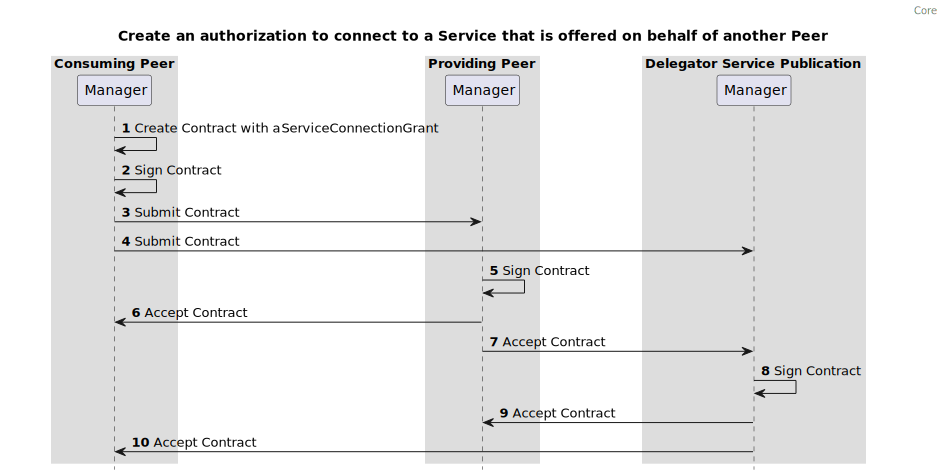
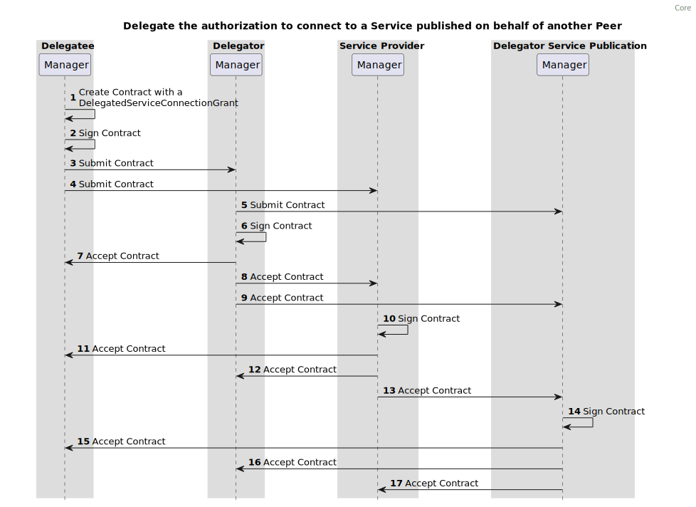

This is a proposed recommendation approved by TO. Comments regarding this document may be sent to api@logius.nl
Conformance
As well as sections marked as non-normative, all authoring guidelines, diagrams, examples, and notes in this specification are non-normative. Everything else in this specification is normative.
The key words MAY, MUST, MUST NOT, RECOMMENDED, and SHOULD in this document
are to be interpreted as described in
BCP 14
[RFC2119] [RFC8174]
when, and only when, they appear in all
capitals, as shown here.
Abstract
This Federated Service Connectivity (FSC) standard describes how different parties (within FSC known as Peers) should interact when exchanging data in a uniform, secure and automated manner.
The goal of FSC is to achieve technically interoperable API gateway functionality, covering federated authentication and secure connections in a large-scale dynamic API landscape.
The core of FSC is to manage (service) connections between FSC Peers via mutually agreed and signed contracts. These contracts are the technical prerequisite for connecting to services.
Contracts are negotiated, and signed in a decentralized federated manner.
In addition to service connectivity, FSC provides a scheme for service discovery using a centralized directory. Peers providing services can voluntarily publish (some of) their services into this directory.
Peers consuming services can find the required location information for initiating contract negotiation for a particular service in this directory.
Security is at the foreground in FSC. Peers collaborating via FSC need to collaborate with each other in a FSC Group. The FSC Group is used for establishing trust between peers using a Public Key Infrastructure (PKI) scheme.
Technically FSC leverages PKI based on x.509 architecture to establish trust between Peers. Participating Peers agree on a Root CA acting as Trust Anchor. All connections between Peers leverage mTLS and contracts are cryptographically signed.
This combination ensures strong confidentiality and integrity.
1. Introduction
This section gives an introduction to FSC.
Section 2 describes the architecture of a system that follows the FSC specification.
Section 3 describes the interfaces and behavior of FSC components in detail.
1.1 Purpose
The Federated Service Connectivity (FSC) specifications describe a way to implement technically interoperable API gateway functionality, covering federated authentication and secure connecting in a large-scale dynamic API landscape.
The Core part of the FSC specification achieves inter-organizational, technical interoperability:
to discover Services.
to route requests to Services in other contexts (e.g. from within organization A to organization B).
to request and manage authorizations needed to connect to said Services.
to delegate the authorization to connect or publish Services on behalf of another organization
Functionality required to achieve technical interoperability is provided by APIs as specified in this RFC. This allows for automation of most management tasks, greatly reducing the administrative load and enabling up-scaling of inter-organizational usage of services.
1.2 Terminology
This specification lists terms and abbreviations as used in this document.
Peer:
Actor that provides and/or consumes Services. This is an abstraction of e.g. an organization, a department or a security context.
Group:
System of Peers using Inways, Outways and Managers that confirm to the FSC specification to make use of each other's Services.
Governed by a set of rules and restrictions aligning on required parameters needed for the practical workings of an FSC Group.
Inway:
Reverse proxy that handles incoming connections to one or more Services.
Outway:
Forward proxy that handles outgoing connections to Inways.
Contract:
Agreement between Peers defining what interactions between Peers are possible.
Delegator:
A Peer who delegates a connection authorization to a Service or the authorization to publish a Service to another Peer.
Delegatee:
A Peer who acts on behalf of another Peer.
Grant:
Defines an interaction between Peers. Grants are part of a Contract. In FSC Core four Grants are described.
The ServicePublicationGrant which specifies the authorization of a Peer to publish a Service in the Group.
The ServiceConnectionGrant which specifies the authorization of a Peer to connect to a Service provided by a Peer.
The DelegatedServicePublicationGrant which specifies the authorization of one peer to publish a Service to the Group on behalf of another Peer.
The DelegatedServiceConnectionGrant which specifies the authorization of one Peer to connect to a Service on behalf of another Peer.
Manager:
The Manager is an API which manages Contracts and acts as an authorization server which provides access tokens.
Directory:
A Manager which acts as a Service and Peer discovery point of the Group.
Service:
An HTTP API offered to the Group.
Trust Anchor:
The Trust Anchor (TA) is an authoritative entity for which trust is assumed and not derived. In the case of FSC, which uses an X.509 architecture, it is the root certificate from which the whole chain of trust is derived.
Trust Anchor List:
A list of one or more Trust Anchors. In the case of FSC, which uses an X.509 architecture, it is a list of all root certificates that are used as Trust Anchor. In practice this would be a list of one or more Certificate Authorities (CA's).
Certificates issued by a CA that acts as a Trust Anchor are trusted within FSC Group.
1.3 Overall Operation of FSC Core
Peers in a Group announce their HTTP APIs to the Group by publishing them as a Service to a Directory. A Group can use multiple Directories which define the scope of the Group. Peers use the Directories to discover what Services and Peers are available in the Group.
Inways of a Peer expose Services to the Group.
Outways of a Peer connect to the Inway of a Peer providing a Service.
Contracts define the Service publication to the Group and connections between Peers.
Peers can delegate the authorization to connect a Service to other Peers using specific Grants on a Contract.
Peers can delegate the authorization to publish a Service to other Peers using specific Grants on a Contracts.
Outways are forward proxies that route outgoing connections to Inways. Inways are reverse proxies that route incoming connections from Outways to Services. Managers negotiate Contracts between Peers. Managers provide access tokens which contain the authorization to connect a Service.
Outways include the access tokens in requests to Inways
The address of an Inway offering a Service is contained in the access token.
Inways authorize connection attempts by validating access tokens.
Services in the Group can be discovered through a Directory. The Manager's address of a Peer can be discovered through a Directory.
To connect to a Service, the Peer needs a Contract with a ServiceConnectionGrant or DelegatedServiceConnectionGrant that specifies the connection. The FSC Core specification describes how Contracts are created, accepted, rejected and revoked. Once an authorization to connect is granted through a Contract, a connection from HTTP Client to HTTP Service will be authorized everytime an HTTP request to the Service is made.
1.3.1 Extensions
FSC Core specifies the basics for setting up and managing connections in a Group.
Auxiliary functionality for either an FSC Peer or an entire FSC Group can be realized with extensions. An Extension performs a well scoped feature enhancing the overall working of FSC.
It is RECOMMENDED to use FSC Core with the following extensions, each specified in a dedicated RFC:
FSC Core provides the foundation for cooperation between organizations (Peers). However, in practice additional decisions have to be made to guarantee a functioning Group within a broader context.
For example, it may be needed for a Group to have additional restrictions or agreements within the Group. Certain Group rules and restrictions are required for the operation of the Group, others provide optional agreements to enhance collaboration.
The following decisions MUST be part of the Group:
Select one or more Trust Anchors to include in the Trust Anchor list
Select at least one Peer who acts as the Directory of the Group
Decide what ports are used for Management traffic
Determine requirements for allowed TLS versions and Cipher Suites
Determine which network will be used
In addition to the mandatory decisions, a Group MAY also contain additional agreements or restrictions. These are not technically required for the operation of FSC Core, but can become mandatory within a Group. An example would be a set of additional rules in order to comply with local legislation.
Below are a few examples listed of these additional decisions for inspirational purposes:
Any extensions required by Peers within the Group
Agreements on data retention
The specifics of the retry mechanism used for Contract synchronization
Additional restrictions on Certificate revocation by mandating OCSP or CRL checks
1.3.3 Use cases
A typical use case is a cooperation of many organizations that use APIs to exchange data or provide other business services to each other.
Organizations can participate in multiple Groups at the same time.
Reasons for participating in multiple Groups could be the use of different environments for production and test deployments or when participating in different ecosystems like health industry and government industry.
An organization can offer the same API in multiple Groups. When doing so, the organization will be a Peer in every Group, and define the API as a Service in one of the Directories of each Group using a different Inway for each Group.
2. Guidelines
This section is non-normative.
There are no hard restrictions on the creation of FSC Groups.
However, an FSC Group establishes the boundaries for its Peers within this Group. Also, the characteristics of a Group are not easily changed.
Creating a Group should be a well considered decision.
This non-normative section offers some guidelines that may aid with the decision process in determining whether it is beneficial to create a Group.
The Group defines the overall scope of collaboration between Peers. It defines technical requirements for communication, like network ports, as well as establishing a network of trust for Peers to collaborate within.
Collaboration between Peers in a Group is facilitated, not mandated. Because of this it is important to consider making the Group as broad as possible, so many Peers can become part of the Group.
In principle, fewer (but larger) Groups stimulate broader collaboration, as opposed to a more dispersed Group landscape.
It is expected that the number of Groups will be limited. But there could be a need for a new Group if more strict isolation is needed:
for example if FSC is also used within the boundaries of an internal network
a very specific trust anchor already is used for a specific domain
Creating a new Group may be appropriate if:
there is a need to isolate traffic on a network level between a set of Peers
requiring a specific trust anchor
Creating a new Group may not be the right approach if:
collaboration is temporary in nature
the appropriate trust anchor is already used in an existing Group
it is not known beforehand with which Peers there must be a collaboration in the future, or this may vary over time
there is a need to collaborate with a lot of Peers
3. Architecture
This chapter describes the basic architecture of an FSC system.
3.1 Identity and Trust
Connections between Managers, Inways, Outways use Mutual Transport Layer Security (mTLS) with X.509 certificates.
Components in the Group are configured to accept the same (Sub-) Certificate Authorities (CA) as defined in the Trust Anchors list (TA). Each TA is a Trusted Third Party that ensures the identity of the Peers by verifying a set of fields of the subject field , section 4.1.2.6 of [RFC5279] that act as PeerID in each X.509 certificate.
When multiple TAs are used the TAs must ensure that the elements of the subject field used to identify a Peer are the same across the TAs.
Contracts are negotiated between the Managers of Peers. A Directory provides the address of each Manager.
Connections to Services are authorized by Contracts with ServiceConnectionGrants. To create a new contract, the Manager uses a selection of desired connections as input. (Typically this input comes from a user interface interacting with the Management functionality). For each desired connection, a ServiceConnectionGrant is formulated that contains identifying information about both the Outway from the Service consumer and the Service of the Service provider. One Contract may contain multiple Grants. Grants typically match the connections mentioned in a legal agreement like a Data Processing Agreement (DPA). Valid Contracts are used to configure Inways and Outways and enable the possibility to automatically create on demand connections between Peers, as defined in the Grants.
Contracts can contain multiple Peers. E.g. if a Peer wants a single Contract for an application, this Contract can contain all the connections required for that application.
The initiating Peer gets the address of the Manager from a Directory.
The Directory returns the Manager address to the Peer.
The initiating Peer sends the Contract proposal with its accept signature to the receiving Peer.
The receiving Peer sends back its own accept signature to the initiating Peer.
3.2.1 Contract states
Any Peer can submit a Contract to other Peers. This Contract becomes valid when the Peers mentioned in the Contract accept the Contract by placing an accept signature.
A Contract becomes invalid when at least one Peer mentioned in the Contract revokes the Contract.
A Contract becomes invalid when at least one Peer mentioned in the Contract rejects the Contract.
A Contract becomes invalid when the validity period of the Contract expires.
Accepting, rejecting and revoking is done by adding a digital signature.
The content of a Contract is immutable. When the content of a Contract is subject to change, the Contract is invalidated and replaced by a new one.
A Group is a system of Peers using Inways, Outways and Managers that confirm to the FSC specification to make use of each other's Services.
In order to create a Group, additional Group Rules & Restrictions containing at least the mandatory decisions MUST be created.
3.4 Service discovery
Every Group is defined by at least one Directory, which contains the Services and Peers in the Group.
Peers can make themselves known to a Directory by having their Manager call the Announce endpoint of the Directory.
The Peer creates a Contract with a Service Publication Grant which contains the details of the Service.
The Peer adds its own accept signature to the Contract.
The Peer sends the Contract and accept signature to the Directory.
The Directory adds its own accept signature.
The Directory sends the accept signature to the Peer.
3.5 Create an authorization to connect to a Service
A connection can be established if the Peer connecting to the Service has a valid Contract containing a ServiceConnectionGrant with the Peer providing the Service.
The connection Grants contains information about the Service and the public key of the Outway that is authorized to connect to the Service.
The Contract is distributed among the two Peers. Once the Contract is signed by all Peers, the Outway can connect to the Inway offering the Service.
The Service consumer creates a Contract with a Service Connection Grant. This Grant contains the details of the Service and the consumer.
The Service consumer adds an accept signature to the Contract.
The Service consumer sends the Contract and the accept signature to the Service Provider.
The Service provider adds its own accept signature.
The Service provider sends the accept signature to the Service consumer.
When the Service is being offered on behalf of another Peer, the Contract is distributed among three Peers. The Peer acting as Delegator in the Service publication will also receive the Contract.
Once the Contract is signed by all the Peers, the Outway can connect to the Inway offering the Service on behalf of the Delegator.

Figure 6Connecting to a Service that is offered on behalf of another Peer
The Service consumer creates a Contract with a Service Connection Grant. This Grant contains the details of the Service, the Delegator of the Service publication and the consumer.
The Service consumer adds an accept signature to the Contract.
The Service consumer sends the Contract and the accept signature to the Service provider.
The Service consumer sends the Contract and the accept signature to the Delegator of Service Publication.
The Service provider adds its own accept signature.
The Service provider sends the accept signature to the Service consumer.
The Service provider sends the accept signature to the Delegator.
The Delegator adds its own accept signature.
The Delegator sends the accept signature to the Service provider.
The Delegator sends the accept signature to the Service consumer.
3.6 Delegate the authorization to connect to a Service
3.6.1 A delegated service connection
A connection on behalf of another Peer (delegation) can only be established if the Peer connecting to the Service has a valid Contract containing a DelegatedServiceConnectionGrant with the Peer providing the Service.
The connection Grants contains information about the Service, the public key of the Outway that is authorized to connect to the Service and the Peer acting as Delegator.
The Contract is distributed among the three Peers. Once the Contract is signed by all the Peers, the Outway of the Delegatee can connect to the Inway offering the Service on behalf the Delegator.
The Delegatee creates a Contract with a Delegated Service Connection Grant. This Grant contains the details of the Delegator, the Service and the Delegatee (the Peer who will consume the Service).
The Delegatee adds its own accept signature to the Contract.
The Delegatee sends the Contract and accept signature to the Delegator.
The Delegatee sends the Contract and accept signature to the Service Provider.
The Delegator adds its own accept signature.
The Delegator sends the accept signature to the Delegatee.
The Delegator sends the accept signature to the Service Provider.
The Service Provider adds its own accept signature.
The Service Provider sends the accept signature to the Delegatee.
The Service Provider sends the accept signature to the Delegator.
3.6.2 Combining a delegated service publication with a delegated service connection
When the Service is being offered on behalf of another Peer the Contract is distributed among four Peers. The Peer acting as Delegator in the Service publication will also receive the Contract.
Once the Contract is signed by all the Peers, the Outway of the Delegatee can connect to the Inway offering the Service on behalf of the Delegator.

Figure 8Delegate a connection to a Service that is offered on behalf of another Peer
The Delegatee creates a Contract with a Delegated Service Connection Grant. This Grant contains the details of the Delegator, the Service, the Delegator of the Service publication, and the Delegatee (the Peer who will consume the Service).
The Delegatee adds its own accept signature to the Contract.
The Delegatee sends the Contract and accept signature to the Delegator.
The Delegatee sends the Contract and accept signature to the Service provider.
The Delegatee sends the Contract and accept signature to the Delegator of the Service publication.
The Delegator adds its own accept signature.
The Delegator sends the accept signature to the Delegatee.
The Delegator sends the accept signature to the Service provider.
The Delegator sends the accept signature to the Delegator of the Service publication.
The Service provider adds its own accept signature.
The Service provider sends the accept signature to the Delegatee.
The Service provider sends the accept signature to the Delegator.
The Service provider sends the accept signature to the Delegator of the Service publication.
The Delegator of the Service publication adds its own accept signature.
The Delegator of the Service publication sends the accept signature to the Delegatee.
The Delegator of the Service publication sends the accept signature to the Delegator.
The Delegator of the Service publication sends the accept signature to the Service provider.
3.7 Consuming a Service
A Peer can consume a Service by sending a request for said Service to an Outway.
The Peer obtains an access token from the Manager of the Peer providing the Service.
The Outway proxies the request including the access token to the Inway.
The Inway will validate the access token and proxy the request to the Service.
The protocol used between the Inway and Outway can be either HTTP/1.1[RFC9112] or HTTP/2[RFC9113]. The protocol is determined by the protocol field of a Service as specified in the object .components/schemas/serviceListingService of the OpenAPI Specification.
4.1.1 Port configuration
In order to provide a predictable network configuration FSC limits the selection of network ports to be used by components.
The ports used by FSC components MUST be 443 or 8443.
Port 443 is RECOMMENDED for data traffic i.e. HTTP requests to a Service. Port 8443 is RECOMMENDED for management traffic i.e. submitting/signing Contracts.
Data traffic: Inway, Outway Management Traffic: Directory, Manager
4.1.2 Group ID
The Group ID is the identifier of the Group. This identifier is chosen by the Group upon creation of the Group. The Group ID MUST match the following regular expression ^[a-zA-Z0-9./_-]{1,100}$
4.1.3 Peer ID
Each Peer MUST have a unique identifier within the Group, this identifier is called the PeerID. The PeerID is determined by at least one element from the subject field section 4.1.2.6 of [RFC5280] of an X.509 certificate. Each Group MUST define which element(s) of the subject field of the X.509 certificate act as PeerID.
The TA(s) issuing the certificates must ensure that PeerID is always the same for a Peer in each issued certificate for said Peer.
4.1.4 Peer name
Each Peer MUST have a human-readable name which can be used to identify a Peer. Unlike the PeerID the name does not have to be unique. The name of Peer is determined by an element in the subject field section 4.1.2.6 of [RFC5280] of an X.509 certificate. The Group MUST define which element of the subject field is used.
4.1.5 Trust Anchor
The Trust Anchor (TA) is an authoritative entity for which trust is assumed and not derived. In the case of FSC, which uses an X.509 architecture, it is the root certificate from which the whole chain of trust is derived.
Each Group can have multiple TAs that are defined in a Trust Anchor List.
Every Peer in a Group MUST accept the same TA(s) that are defined in the Trust Anchor List defined by the Group.
The TA SHOULD validate a Peers identity, i.e. the TA MUST perform Organization Validation.
4.1.6 TLS configuration
Connections between Inways, Outways, Managers of a Group are mTLS connections based on X.509 certificates as defined in [RFC5280].
The certificate guarantees the identity of a Peer.
FSC places specific requirements on the subject fields of a certificate. section 4.1.2.6 of[RFC5280] which are listed below
Subject Alternative Name section 4.1.2.6 of[RFC5280]: This should contain the Fully Qualified Domain Names (FQDN) of a Manager, Inway or Outway. For an Outway this FQDN does not have to resolve externally.
Subject Organization: This should contain to the name of the Organization.
The representation and verification of domains specified in the X.509 certificate MUST adhere to [RFC6125]
4.1.6.1 TLS Version
The TLS versions used between Peers in a Group MUST be defined in the additional Group Rules & Restrictions.
4.1.6.2 Certificate & Public key thumbprints
FSC differentiates between two different types of thumbprints, often also called fingerprints. Certificate thumbprints and Public Key thumbprints.
Public Key thumbprints are used in FSC contracts, this enables the renewal of the certificate without invalidating the contract, since the Public Key thumbprint remains the same between Certificate renewals.
Certificate thumbprints are used in the certificate-bound access tokens section 3 of [RFC8705]. FSC uses certificate-bound access tokens to authorize a connection to a Service. Certificate thumbprints are always part of a X.509 certificate and MUST be created as described in section 4.1.8 of [RFC7515].
Within FSC both Certificate thumbprints and Public Key thumbprints uses the sha256 thumbprint.
4.1.7 Error Handling
The Inway and Outway both have a single endpoint which proxies HTTP requests.
In case of an error within the scope of FSC these components MUST return the HTTP header Fsc-Error-Code which MUST contain the code specifying the error.
The response body must contain an object as described in .components/schemas/error of the OpenAPI Specification.
The HTTP status codes that MUST be used in combination with the HTTP header Fsc-Error-Code are defined in the sections 3.7.1.4 and 3.8.2.2.
4.1.8 JSON
Since all hashes are created using the JSON Canonicalization Scheme (JCS) [RFC8785] representation, the content
of a Contract MUST conform to the rules as described in [RFC8259] and [RFC7493].
When introducing new properties as part of an extension, these MUST also be checked against these rules.
4.2 Contracts
The content of a Contract is defined in the object .components/schemas/contractContent of the OpenAPI Specification
A UUID MUST be provided in the field contract.iv. The value must be unique. Each Peer is responsible for ensuring that only one Contract can exist with a given iv.
A hash algorithm is provided in the field contract.content.hash_algorithm.
The date provided in contract.content.created_at can not be in the future.
The Group ID of the Manager matches the Group ID defined in the field contract.group_id.
A valid date is provided in contract.content.validity.not_before.
A valid date is provided in contract.content.validity.not_after.
The date provided in contract.content.validity.not_after must be greater than the date provided in the field contract.validity.not_before.
The date provided in contract.content.validity.not_after must be in the future.
At least one Grant is set in the field contract.content.grants.
A ServicePublicationGrant or DelegatedServicePublicationGrant cannot be mixed with other Grants. Mixing Grant types with different use-cases is prohibited to prevent the creation of Contracts that are hard to maintain and validate.
Per Grant type, different validation rules apply.
4.2.1.1 ServicePublicationGrant
The content of a ServicePublicationGrant is defined in the object .components/schemas/grantServicePublication of the OpenAPI Specification
Validation rules:
The Peer ID provided by the X.509 certificate used by the Manager of the Directory Peer matches the value of the field grant.data.directory.peer_id
The Peer ID provided by the X.509 certificate used by the Manager offering the Contract to the Directory matches the value of the field grant.data.service.peer_id
A Service name which matches the regular expression ^[a-zA-Z0-9-._]{1,100}$ is provided in the field grant.data.service.name
If grant.data.properties is provided, it MUST be a valid JSON Object
Signature requirements:
A signature is present with the Peer ID of the Peer defined in the field grant.data.directory.peer_id
A signature is present with the Peer ID of the Peer defined in the field grant.data.service.peer_id
4.2.1.2 DelegatedServicePublicationGrant
The Delegatee is the Peer specified in grant.data.service.peer_idThe Delegator is the Peer specified in grant.data.delegator.peer_id
Validation rules:
The Peer ID provided by the X.509 certificate used by the Manager creating the delegation matches the value of the field grant.data.delegator.peer_id
The Peer ID provided by the X.509 certificate used by the Manager of the Directory Peer matches the value of the field grant.data.directory.peer_id
The Peer ID provided by the X.509 certificate used by the Manager providing the Service matches the value of the field grant.data.service.peer_id
The validation rules of the field Service of the ServicePublicationGrant described in Core must be applied to the field grant.data.service of the DelegatedServicePublicationGrant
If grant.data.properties is provided, it MUST be a valid JSON Object
Signature requirements:
A signature is present with the subject serial number of the Peer defined the field grant.data.service.peer_id
A signature is present with the subject serial number of the Peer defined the field grant.data.directory.peer_id
A signature is present with the subject serial number of the Peer defined the field grant.data.delegator.peer_id
4.2.1.3 ServiceConnectionGrant
The content of a ServiceConnectionGrant is defined in the object .components/schemas/grantServiceConnection of the OpenAPI Specification
Validation rules:
The Peer ID provided by the X.509 certificate used by the Manager of the Peer providing the Service matches the value of the field grant.data.service.peer_id
The Peer ID provided by the X.509 certificate used by the Manager offering the Contract to the Service providing Peer matches the value of the field grant.data.outway.peer_id
The Service provided in the field grant.data.service.name is offered by the Peer provided in the field grant.data.service.peer_id
A Public key thumbprint is provided in the field grant.data.outway.identification.public_key_thumbprint. This validation should only be performed when the value of grant.outway.identification.type equals OUTWAY_IDENTIFICATION_TYPE_PUBLIC_KEY_THUMBPRINT
A domain name is provided in the field grant.data.outway.identification.domain_name. This validation should only be performed when the value of grant.outway.identification.type equals OUTWAY_IDENTIFICATION_TYPE_DOMAIN_NAME
If grant.data.properties is provided, it MUST be a valid JSON Object
Signature requirements:
A signature is present with the Peer ID of the Peer defined in the field grant.data.outway.peer_id
A signature is present with the Peer ID of the Peer defined in the field grant.data.service.peer_id
4.2.1.4 DelegatedServiceConnectionGrant
The Delegatee is the Peer specified in grant.data.outway.peer_idThe Delegator is the Peer specified in grant.data.delegator.peer_id
Validation rules:
The Peer ID provided by the X.509 certificate used by the Manager of the Peer creating the delegation matches the value of the field grant.delegator.peer_id
The Peer ID provided by the X.509 certificate used by the Manager consuming the DelegatedServiceConnectionGrant matches with the value of the field grant.outway.peer_id
The Peer ID provided by the X.509 certificate used by the Manager of the Peer providing the Service matches with the value of the field grant.data.service.peer_id
The validation rules of the fields grant.data.outway and grant.data.service of the ServiceConnectionGrant must be applied to the fields grant.data.outway and grant.data.service of the DelegatedServiceConnectionGrant
In case of a Service that is published on behalf of another Peer, The Peer ID provided by the X.509 certificate used by the Manager of the Peer delegating the publication of Service matches with the value of the field grant.data.service.delegator.peer_id
If grant.data.properties is provided, it MUST be a valid JSON Object
Signature requirements:
A signature is present with the subject serial number of the Peer defined the field grant.data.outway.peer_id
A signature is present with the subject serial number of the Peer defined the field grant.data.delegator.peer_id
A signature is present with the subject serial number of the Peer defined the field grant.data.service.peer_id
In case of a Service that is published on behalf of another Peer, a signature is present with the subject serial number of the Peer defined the field grant.data.service.delegator.peer_id
4.2.2 Properties
Contracts contain the minimum amount of information needed to ensure a secure Service Connection or Publication.
Some use cases might require additional information to ensure correct authentication/authorization or to provide additional functionality.
Use case specific information can be provided using the properties field of a Grant.
This field can contain any type of data as long as the data is valid JSON, making it flexible and suitable for a broad range of use cases.
Only a limited set of properties is allowed. These should be documented in an extension
and the extension should be supported by the FSC Group you are using.
4.2.2.1 Requirements
Each Grant MAY contain a properties object.
The properties object MUST be added to Grants using the key properties.
The properties object MUST be a valid JSON object that can contain any number of key-value pairs.
When provided, the fields of the properties object MUST be included in the access token as specified in the [access token section].(#access_token)
When provided, the fields of the properties object MUST be included in the Grant Hash as specified in the [Grant hash section].(#grant-hash)
4.2.2.2 Security Considerations
It is RECOMMENDED to implement a size limit of 1 MB for the serialized properties object. This limit should prevent excessive data transfer and storage.
Sensitive information like secrets or other private information should not be stored in the properties object, as it may be visible to Services and potentially logged or stored in various systems.
Implementers should be aware that the content of the properties object is unsanitized. For example, they should consider sanitizing the data before showing it in user interfaces to prevent XSS injections or other security vulnerabilities.
4.2.3 Signatures
A signature MUST follow the JSON Web Signature (JWS) format specified in [RFC7515]
A signature on a Contract SHOULD only be accepted if the Peer is present in one of the Grants as:
ServicePublicationGrant
grant.data.directory.peer_id
grant.data.service.peer_id
DelegatedServicePublicationGrant
grant.data.directory.peer_id
grant.data.service.peer_id
grant.data.delegator.peer_id
ServiceConnectionGrant
grant.data.outway.peer_id
grant.data.service.peer_id
grant.data.service.delegator.peer_id
DelegatedServiceConnectionGrant
grant.data.outway.peer_id
grant.data.service.peer_id
grant.data.delegator.peer_id
grant.data.service.delegator.peer_id
The JWS MUST specify the certificate thumbprint of the keypair used to create the digital signature using the x5t#S256section 4.1.8 of [RFC7515] field of the JOSE Headersection 4 of [RFC7515].
The JWS MUST use the JWS Compact Serialization described in section 7.1 of [RFC7515]
The JWS MUST be created using one of the following digital signature algorithms:
RS256
RS384
RS512
ES256
ES384
ES512
The JWS Payload as defined in section 2 of [RFC7515], MUST contain a hash of the contract.content as described in the section Content Hash, one of the signature types described in the signature type section and a Unix timestamp of the sign date.
contract_content_hash, hash of the content of the Contract.
type, type of signature.
signed_at Unix timestamp of the sign date.
4.2.3.2 Signature types
accept, Peer has accepted the contract
reject, Peer has rejected the contract
revoke, Peer has revoked the contract
4.2.4 The content hash
A Peer should ensure that a signature is intended for the Contract. This validation is done by comparing the hash of the received Contract with the hash in the signature. The Validation MUST be done every time a Peer receives a signature.
The contract_content_hash of the signature payload contains the signature hash. The algorithm to create a contract_content_hash is described below.
The algorithm ensures that the content hash is unique for a specific Contract content. Because a signature contains the content hash, it becomes possible to guarantee that a signature is intended for a specific Contract.
Convert the Contract content to Canonical JSON data as described in [RFC8785].
Hash the Canonical JSON data using the hash algorithm specified in content.hash_algorithm.
Encode the bytes of the hash using Base64 URL encoding with all trailing '=' characters omitted and without the inclusion of any line breaks, whitespace, or other additional characters.
Convert the value of content.hash_algorithm to an int32 and enclose it with $. The int32 value per hash algorithm type is defined in the type mapping. E.g. The enum HASH_ALGORITHM_SHA3_512 becomes $1$.
Add 1$ as suffix to the string created in step 4. This is the enum HASH_TYPE_CONTRACT as defined in the field .components.schemas.HashType of the OpenAPI Specification as int32. E.g. If the string created in step 4 is $1$, the result of this step should be $1$1$
Prefix the Base64 string generated in step 3 with the string generated in step 5.
4.2.5 Grant hash
The Grant hash is used in the access token request to identify the Grant which contains the authorization for the connection to the Service.
The iv (Initialization vector) field is included in the Grant hash to create a Grant hash that references to a single Contract.
The Grant hash can be created by executing the following steps:
Create the content hash as described in the content hash section.
Convert the content of grant.data to a Canonical JSON string as described in [RFC8785].
Append the Canonical JSON string to the content hash.
Hash the result of step 3 using the hash algorithm specified in content.hash_algorithm.
Encode the bytes of the hash using Base64 URL encoding with all trailing '=' characters omitted and without the inclusion of any line breaks, whitespace, or other additional characters.
Convert the value of content.hash_algorithm to an int32 and enclose it with $. The int32 value per hash algorithm type is defined in the type mapping.. E.g. The enum HASH_ALGORITHM_SHA3_512 becomes $1$.
Determine the HashType that matches with value of Grant.type and convert it to an int32 and add a $ as suffix. The int32 value per hash type is defined in the type mapping. E.g. The enum HASH_TYPE_SERVICE_PUBLICATION_GRANT becomes 2$.
Combine the strings containing the hash algorithm (step 6) and Hash type (step 7). E.g. The hash algorithm HASH_ALGORITHM_SHA3_512 and Grant Type GRANT_TYPE_SERVICE_CONNECTION should result in the string $1$2$
Prefix the Base64 string generated in step 5 with the string generated in step 8.
4.2.6 Type mappings
4.2.6.1 Hash types
Hash type
int32 value
HASH_TYPE_CONTRACT
1
HASH_TYPE_SERVICE_PUBLICATION_GRANT
2
HASH_TYPE_SERVICE_CONNECTION_GRANT
3
HASH_TYPE_DELEGATED_SERVICE_CONNECTION_GRANT
4
HASH_TYPE_DELEGATED_SERVICE_PUBLICATION_GRANT
5
4.2.6.2 Grant types
Grant type
int32 value
GRANT_TYPE_SERVICE_PUBLICATION
1
GRANT_TYPE_SERVICE_CONNECTION
2
GRANT_TYPE_DELEGATED_SERVICE_CONNECTION
3
GRANT_TYPE_DELEGATED_SERVICE_PUBLICATION
4
4.2.6.3 Hash algorithms
Hash Algorithm
int32 value
HASH_ALGORITHM_SHA3_512
1
4.2.6.4 Service types
Service Type
int32 values
SERVICE_TYPE_SERVICE
1
SERVICE_TYPE_DELEGATED_SERVICE
2
4.2.7 Certificate renewal
This section is non-normative.
There are two scenarios in which a certificate renewal can affect Contracts.
The certificate used to add an accept signature expires before the Contract expires. In this scenario the Peer has to create a new accept signature using the new certificate and resend it to the other Peers on the Contract. Without a valid certificate, Peers cannot verify the signature, rendering the Contract invalid.
A Contract contains a ServiceConnectionGrant(s) with a thumbprint of a public key used by a certificate that expires before the Contract expires. In this scenario, the Peer can renew the certificate without rotating the keypair, ensuring that the public key thumbprint remains unchanged. As a result, the Contract remains unaffected.
However, if the keypair is rotated, the public key thumbprint will change and the Outway can no longer use the ServiceConnectionGrant to connect to the Service. As a result, a new Contract will need to be created containing a ServiceConnectionGrant with the new public key thumbprint.
4.3 Access token
The access token is a JSON Web Token (JWT) as specified in [RFC7519]
The JWT MUST specify the thumbprint of the X.509 certificate used to sign the JWT using the x5t#S256section 4.1.8 of [RFC7515] field of the JOSE Headersection 4 of [RFC7515].
The JWT MUST be created using one of the following digital signature algorithms:
RS256
RS384
RS512
ES256
ES384
ES512
The access token is a certificate-bound access token as specified in section 3 of [RFC8705]
4.3.1 JWT Payload
The payload of the JWT:
gth(string): The hash of the Grant that serves as the basis for the authorization
gid(string):
The ID of the Group
sub(string):
The subject section 4.1.2 of [RFC7519]. This should be the ID of the Peer for whom the token is intended
iss(string):
The issuer section 4.1.1 of [RFC7519]. The ID of the Peer who issued the token. I.e. the Peer who is offering the Service
svc(string):
Name of the Service
aud(string):
The audience section 4.1.3 of [RFC7519]. This should be URI [RFC3986] of the Inway providing the Service. The URI is a URL that MUST contain the scheme and port number used by the Inway
x5t#S256(string):
The thumbprint of the certificate that is allowed to use the access token. [section 3.1] of [RFC8705]
act(object):
sub(string):
The ID of the Peer connecting to the Service on behalf of another Peer. The field grant.data.delegator.peer_ID of the DelegatedServiceConnectionGrant.
pdi(string):
The ID of the Peer delegating the publication of the Service to another Peer. The field grant.data.service.delegator.peer_ID of the ServiceConnectionGrant or DelegatedServiceConnectionGrant.
prp(object):
If the Grant contains a properties object, its content should be included in the claim prp
add(object):
An object which can be used to provide additional data
Example payload of a JWT for a Peer (sub: 1234567890) connecting to a Service (svc: serviceName) offered by a Peer(iss: 1234567891) with the properties object provided in the Grant :
Example payload of a connection of a Peer (sub: 1234567890) to a Service (svc: serviceName) offered by a Peer (iss: 1234567891) on behalf of another Peer(pdi: 1234567892):
Example payload for a JWT of a Peer (act.sub: 1234567892) who is connecting on behalf of Peer (sub: 1234567890) to a Service (svc: serviceName) offered by a Peer (iss: 1234567891):
Providing the X.509 certificates of the keypair of which the private key was used by the Peer to create signatures
Providing Contracts involving a specific Peer
Providing access tokens
Listing Peers
Listing Services
It is RECOMMENDED to implement the Manager functionality separate from the Inway functionality, in order to be able to have multiple Inways that are configured by one Manager.
4.4.1 Behavior
4.4.1.1 Authentication
The Manager MUST only accept mTLS connections from other external Managers with an X.509 certificate that is signed by the TA of the Group.
4.4.1.2 Contracts
The Manager MUST support Contracts containing Grants of the type ServicePublicationGrant and ServiceConnectionGrant.
When storing Contracts, the order of items in arrays MUST be persisted to guarantee consistent Contract hashes and Grant hashes.
The Manager MUST persist the Peer ID, name and Manager address of each Peer with whom the Peer has negotiated Contracts.
It is RECOMMENDED to implement a retry and backoff mechanism in case the Contract propagation fails.
4.4.1.3 Signatures
The Manager MUST validate the signature according to the rules described in the signature section.
The Manager MUST generate an error response if a signature is invalid.
The Manager MUST propagate the signature to each of the Peers in the Contract when the Peer signs the Contract.
It is RECOMMENDED to implement a retry and backoff mechanism in case the signature propagation fails.
4.4.1.4 Providing X.509 certificates
The Manager MUST provide X.509 certificates of the keypairs used to sign Contracts and access tokens.
The Manager MUST provide the complete certificate chain excluding the root CA certificate used by the Group as Trust Anchor.
4.4.1.5 Providing contracts
The Manager MUST provide existing Contracts for a specific Peer. A Contract SHOULD only be provided to a Peer if the Peer is present in one of the Grants of the Contract.
4.4.1.6 Tokens
The Manager MUST be able to provide an access token to Peers that have a valid Contract containing a ServiceConnectionGrant or DelegatedServiceConnectionGrant.
Before issuing an access token the Manager MUST validate that:
The scope provided in the token request contains a Grant hash that matches with a ServiceConnectionGrant or DelegatedServiceConnectionGrant of a valid Contract.
The client_id provided in the token request contains a PeerID that matches with the PeerID specified in the X.509 certificate of the client requesting the access token and later using the access token to make an API request.
The Manager is provided by a Peer with the same PeerID as specified in grant.data.service.peer_id.
The Manager is provided by a Peer who has an Inway which is offering the Service specified in grant.data.service.name.
The Peer ID specified by the X.509 certificate of the client requesting the access token matches the value of the field grant.data.outway.peer_id.
The X.509 certificate provided by the client contains a public key with the same public key thumbprint as specified in grant.data.outway.identification.public_key_thumbprint. This validation should only be performed when the value of grant.outway.identification.type equals OUTWAY_IDENTIFICATION_TYPE_PUBLIC_KEY_THUMBPRINT
The X.509 certificate provided by the client has a Subject Alternative Name (SAN) that matches the domain name specified in grant.data.outway.identification.domain_name. This validation should only be performed when the value of grant.outway.identification.type equals OUTWAY_IDENTIFICATION_TYPE_DOMAIN_NAME
The cnf.x5t#S256 claim MUST contain the certificate thumbprint of the X.509 certificate provided by the client requesting the token according to [section 3.1] of [RFC8705].
The act claim MUST be set when an access token is generated for a Peer who is connecting to the Service on behalf of another Peer. I.e. the authorization to connect has been granted using a DelegatedServiceConnectionGrant.
The pdi claim MUST be set when an access token is generated for a Service which is being offered on behalf of another Peer.
The prp claim MUST be set when the Grant contains the properties object in the grant.data.properties field.
The Manager MUST include the address of the Inway in the field aud of the access token.
4.4.1.7 Services
The name of a Service MUST be unique within the scope of a Peer.
The Peer is responsible for checking the uniqueness of a Service name.
4.4.1.8 Service listing
The Manager MUST list a Service when a valid Contract containing a ServicePublicationGrant or DelegatedServicePublicationGrant for the Service exists.
4.4.1.9 Peer listing
The Manager MUST list the Peers with whom the Peer has negotiated Contracts or who announced themselves to the Peer.
The Manager MUST persist the Peer ID, name and Manager address of each Peer with whom the Peer has negotiated Contracts.
The Manager MUST persist the Peer ID, name and Manager address of each Peer who called the announce endpoint as specified in the OpenAPI Specification.
4.4.2 Announce
The announce is used to share the Manager address and Peer information among Peers. The announce is also used by the Directory to obtain the Manager addresses of all Peers in the Group.
Each PeerMUST call the announce endpoint of a Directory to register themselves as participant of the Group.
In addition to announcing to the Directory a Manager SHOULD call the announce endpoint of the Peers with whom the Peer has negotiated Contracts when the address of Manager changes.
4.4.3 Interfaces
The Manager functionality MUST implement an HTTP interface as specified in the OpenAPI Specification.
4.4.4 FSC manager address
The Manager is required to include its public address as HTTP Header Fsc-Manager-Address in each POST or PUT request sent to another Manager.
4.4.5 Error response
The Manager implements two error formats
4.4.5.1 OAuth 2.0 error response
The /token endpoint MUST return an error response as described in section 5,2 of [RFC6749].
4.4.5.2 Other endpoints
The Manager MUST return the error response object as described in .components/schemas/error of the OpenAPI Specification.
The code field of the error response MUST contain one of the codes defined as .components.schemas.ManagerErrorCode in the OpenAPI Specification.
The domain field of the error response MUST be equal to ERROR_DOMAIN_MANAGER.
4.4.5.3 Codes
Error code
HTTP status code
Description
ERROR_CODE_INCORRECT_GROUP_ID
422
The Group ID in the Contract does not match the GroupID of the receiving Manager
ERROR_CODE_SUBMITTING_PEER_NOT_PART_OF_CONTRACT
422
The Peer tried to submit or sign a Contract where the submitting Peer is not on the Contract
ERROR_CODE_RECEIVING_PEER_NOT_PART_OF_CONTRACT
422
The Peer tried to submit or sign a Contract where the receiving Peer is not on the Contract
The Peer tried to submit a signature with a Contract content hash that does not match the Contract
ERROR_CODE_PEER_CERTIFICATE_VERIFICATION_FAILED
400
The Peer provided a x.509 certificate signed by the trust anchor of the Group but the content is invalid. E.g the Peer ID is in a incorrect format
ERROR_CODE_PEER_ID_SIGNATURE_MISMATCH
422
The Peer submitted a signature that includes a Peer ID that does not match the ID of the submitting Peer
ERROR_CODE_SIGNATURE_VERIFICATION_FAILED
422
The Peer submitted a signature that could not be verified
ERROR_CODE_GRANT_COMBINATION_NOT_ALLOWED
422
The Peer submitted a Contract with a combination of Grants that is not allowed
ERROR_CODE_URL_PATH_CONTENT_HASH_MISMATCH
422
The Content Hash in the URL path does not match the Content Hash generated from the Contract Content in the request body
ERROR_CODE_UNKNOWN_HASH_ALGORITHM_HASH
422
The Hash Algorithm in the Contract Content hash or Grant Hash is not supported
ERROR_CODE_UNKNOWN_ALGORITHM_SIGNATURE
422
The Algorithm in the Signature is not supported
ERROR_CODE_UNKNOWN_FSC_VERSION
422
The FSC version in the Contract is unknown to the Manager
4.5 Directory
The Directory is a Manager chosen by the Group to act as a Directory.
The Directory is used by Peers to:
Discover Services
Discover Peers
Publish Services
Register themselves
4.5.1 Behavior
4.5.1.1 Service publication
Service publication is accomplished by offering a Contract to the Directory which contains one or more (Delegated)ServicePublicationGrants with each (Delegated)ServicePublicationGrant containing a single Service. Once the Directory and the Peer offering the Service have both signed the Contract, the Service is published in the Directory.
The Directory MUST be able to sign Contracts with Grants of the type (Delegated)ServicePublicationGrant.
Although multiple (Delegated)ServicePublicationGrants are allowed in a single Contract it is RECOMMENDED to limit this to one per Contract. Adding multiple (Delegated)ServicePublicationGrants on a single Contract makes the Contract fragile. If the publication of one Service changes the whole Contract will be invalidated.
4.6 Outway
The Outway is used by Peers to connect to a Service. The Outway functions as a forwarding proxy that is responsible for setting up the connection to the Inway that is offering a Service.
The Outway is responsible for:
setting up mTLS connections with Inways
including a valid access token with each request
deliver the response from the Service to the client calling the Outway
4.6.1 Behavior
4.6.1.1 Authentication
The Outway MUST use mTLS when connecting to Inways with an X.509 certificate signed by the chosen TA of the Group.
4.6.1.2 Routing
The Outway MUST proxy the request to the address of the Inway specified in the field aud of the access token.
The Outway MUST use an access token provided by the Peer specified in the grant.data.service.peer_id field of the ServiceConnectionGrant.
The Outway MUST include an access token in the HTTP header Fsc-Authorization when proxying the HTTP request to the Inway.
The Outway MUST validate that the Group ID specified in the claim gid of the access token matches the Group ID of the Outway.
The Outway MUST NOT alter the path of the HTTP Request.
Clients MAY use TLS when communicating with the Outway.
4.6.1.3 Obtaining access tokens
Access tokens are obtained using the Client Credentials flow section 4,4 of [RFC6749].
Access tokens MUST be obtained by calling the /token endpoint defined in the OpenAPI Specification.
To request a token via the Client Credentials flow the following information must be sent to the Manager which acts as an Authorization Server:
GrantHash of a Service Connection grant or Delegated Service Connection grant provided in the scope field.
PeerID of the Peer making the request in the client_id field
client_credentials in the grant_type field.
The GrantHash provided in the request to the Manager acts as a reference to a Grant on a Contract.
The Manager (Authorization Server) will perform the verification steps defined in the token section before providing an access token.
The component retrieving the access token MUST use mTLS to authenticate with the Authorization server (Manager) as defined in section 2.1 of [RFC8705].
The component retrieving the access token MUST use an X.509 certificate signed by the chosen TA of the Group.
The Manager MUST verify this client certificate and issue a token bound to this client certificate according to section 3.
Which component obtains an access token for a Service is an implementation detail and out of scope for this document.
4.6.1.4 Error response
If the Error has occurred in the Inway or Service the Outway MUST return the error without altering the response.
The Outway MUST return an error response defined in the Error handling section when the error is produced by the Outway.
The code field of the error response MUST contain one of the codes defined as .components.schemas.OutwayErrorCode in the OpenAPI Specification.
The domain field of the error response MUST be equal to ERROR_DOMAIN_OUTWAY.
4.6.1.4.1 Codes
Error code
HTTP status code
Description
ERROR_CODE_METHOD_UNSUPPORTED
405
The Outway received a request with an HTTP Method that is not supported. The CONNECT method is not supported.
4.7 Inway
The Inway is used by Peers to offer a Service to other Peers. The Inway is a Reverse proxy that handles incoming connections from Outways and routes the request to the correct Service.
The Inway is responsible for:
validating access tokens.
routing requests to the correct Service.
forwarding the access token to the Service which is being called.
returning the response from the Service to the Outway.
4.7.1 Behavior
4.7.1.1 Authentication
The Inway MUST only accept connections from Outways using mTLS with an X.509 certificate signed by the chosen TA of the Group.
4.7.1.2 Authorization
The Inway MUST validate the access token provided in the HTTP Fsc-Authorization.
The request MUST be authorized if the access token meets the following conditions:
The access token is signed by the same Peer that owns Inway.
The access token is used by an Outway that uses the X.509 certificate to which the access token is bound. This is verified by applying the JWT Certificate Thumbprint Confirmation Method specified in section 3.1 of [RFC8705].
The Service specified in the access token is known to the Inway.
The Group ID specified in the claim gid of the access token matches the Group ID of the Inway.
4.7.1.3 Routing
The HTTP request MUST contain the HTTP Header Fsc-Authorization which contains the access token obtained by the Outway.
The Inway MUST proxy the HTTP request to the Service specified in the field svc of the access token.
The Inway MUST not delete the HTTP Header Fsc-Authorization from the HTTP Request before forwarding the request to the Service.
The security of the connection between the Inway and the Service is out of scope for this document.
4.7.2 Interfaces
4.7.2.1 Proxy Endpoint
The HTTP endpoint /MUST be implemented.
4.7.2.2 Error response
The Inway MUST return the error response of a Service to the Outway without altering the response.
The Inway MUST return an error response defined in the Error handling section when the error is produced by the Inway.
The code field of the error response MUST contain one of the codes defined as .components.schemas.InwayErrorCode in the OpenAPI Specification.
The domain field of the error response MUST be equal to ERROR_DOMAIN_INWAY.
4.7.2.2.1 Codes
Error code
HTTP status code
Description
ERROR_CODE_ACCESS_TOKEN_MISSING
401
The HTTP header Fsc-Authorization does not contain an access token. In this scenario the HTTP header WWW-AuthenticateMUST be set to Bearer
ERROR_CODE_ACCESS_TOKEN_INVALID
401
The provided access token is invalid. In this scenario the HTTP header WWW-AuthenticateMUST be set to Bearer
ERROR_CODE_ACCESS_TOKEN_EXPIRED
401
The provided access token has expired. In this scenario the HTTP header WWW-AuthenticateMUST be set to Bearer
ERROR_CODE_WRONG_GROUP_ID_IN_TOKEN
403
The Group ID specified in the access token does not match the ID of the Group of the Inway
ERROR_CODE_SERVICE_NOT_FOUND
404
The Service specified in the access token is not offered by the Inway